01 · Continuous silver
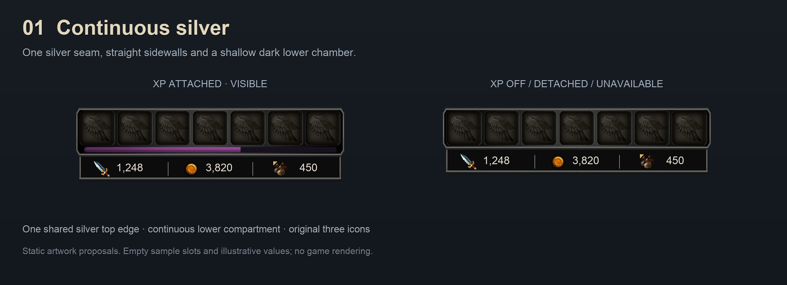
One silver seam, straight sidewalls and a shallow dark lower chamber.
02 · Soft graphite
Shared silver top with gently rounded lower corners.
03 · Clipped steel
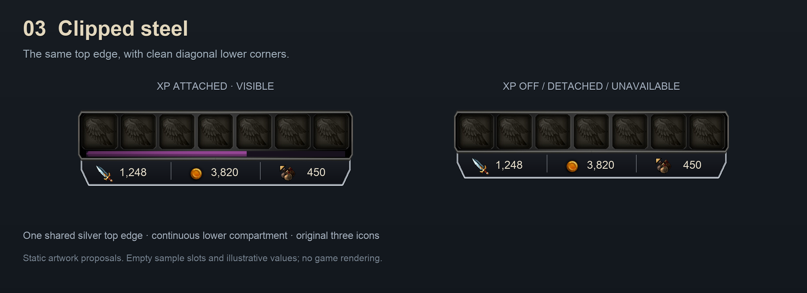
The same top edge, with clean diagonal lower corners.
04 · Recessed bays
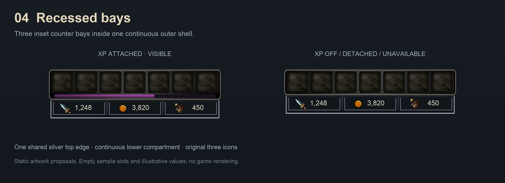
Three inset counter bays inside one continuous outer shell.
05 · Fine ledger
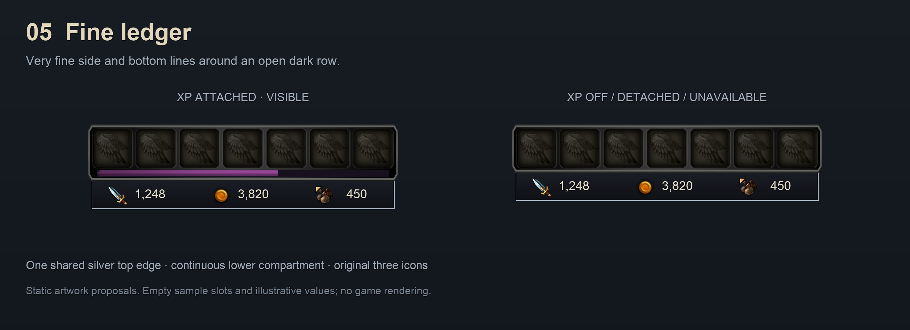
Very fine side and bottom lines around an open dark row.
06 · Carved iron
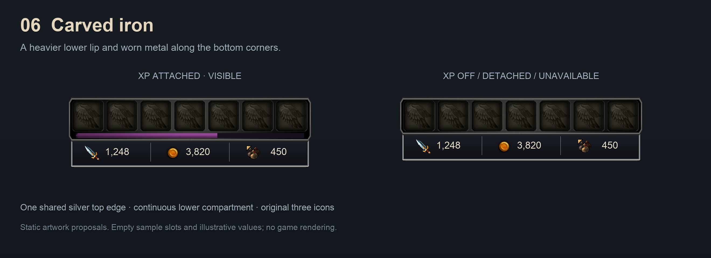
A heavier lower lip and worn metal along the bottom corners.
07 · Central point
One joined compartment tapering to a shallow central point.
08 · Stepped ends
Squared upper walls with compact steps at the lower ends.
09 · Gothic cornice
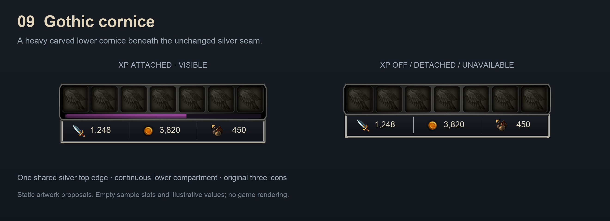
A heavy carved lower cornice beneath the unchanged silver seam.
10 · Triple scallop
Three shallow scallops along a single continuous lower edge.
11 · Central drop
The middle counter sits in a slightly deeper part of the shell.
12 · Fluted ash
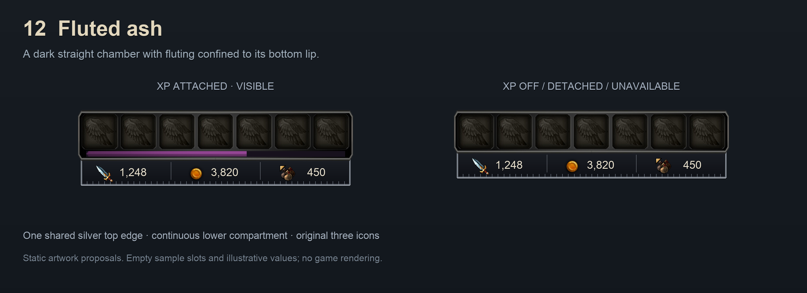
A dark straight chamber with fluting confined to its bottom lip.
13 · Bronze double lip
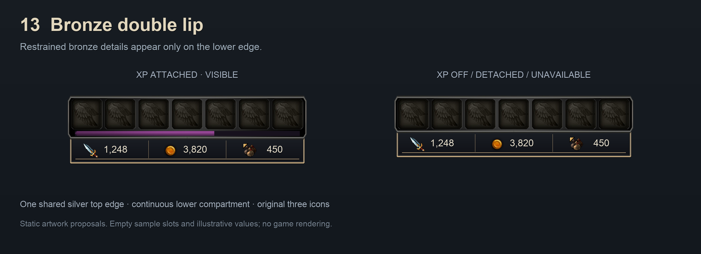
Restrained bronze details appear only on the lower edge.
14 · Curved basin
A single shallow curved lower outline beneath all three counters.
15 · Descending chevron
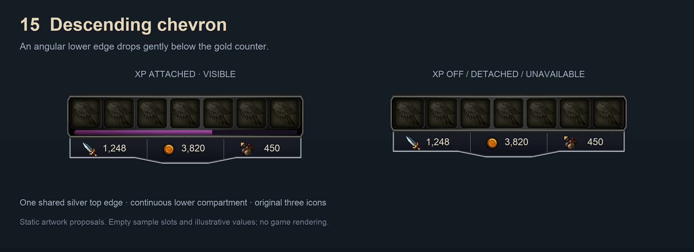
An angular lower edge drops gently below the gold counter.
16 · Silver three-bay
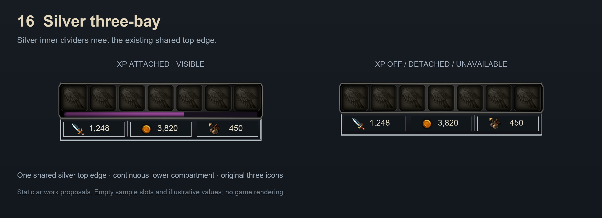
Silver inner dividers meet the existing shared top edge.
17 · Asymmetric pennant
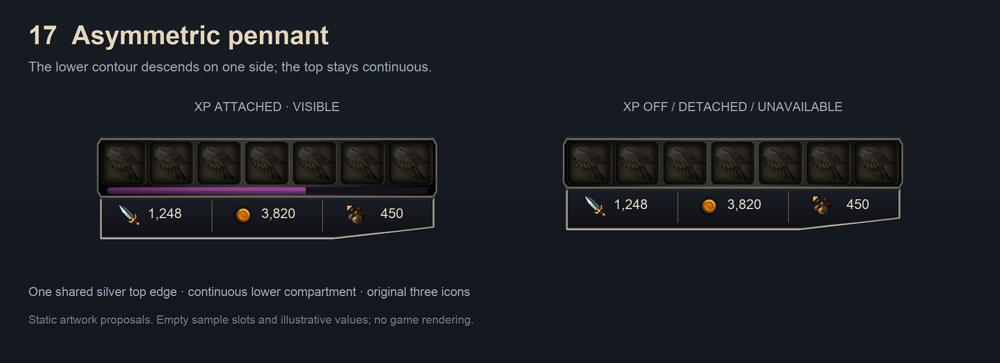
The lower contour descends on one side; the top stays continuous.
18 · Center step
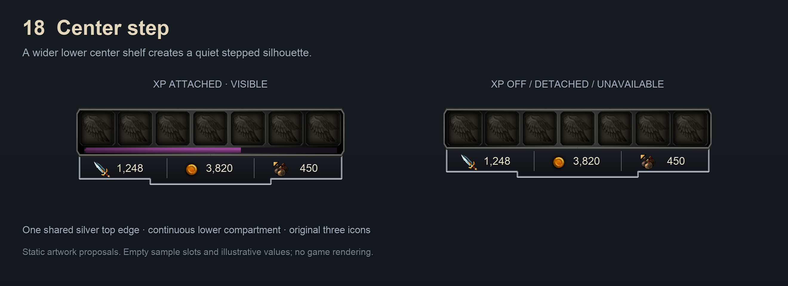
A wider lower center shelf creates a quiet stepped silhouette.
19 · Gunmetal groove
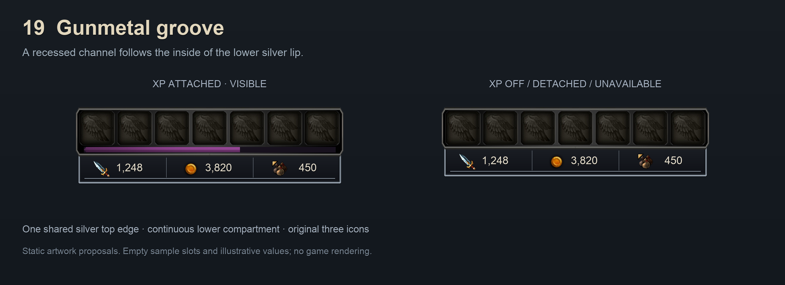
A recessed channel follows the inside of the lower silver lip.
20 · Icon alcoves
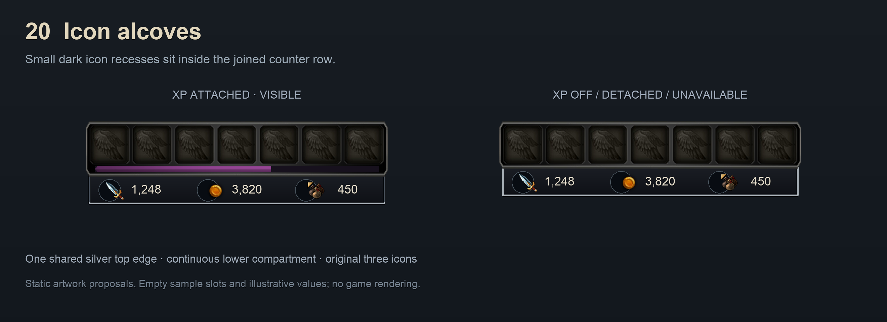
Small dark icon recesses sit inside the joined counter row.
21 · Copper taper
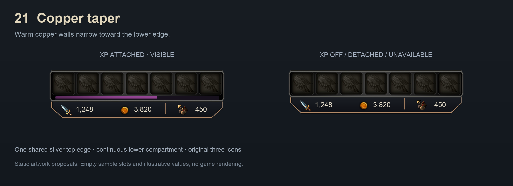
Warm copper walls narrow toward the lower edge.
22 · Blood iron
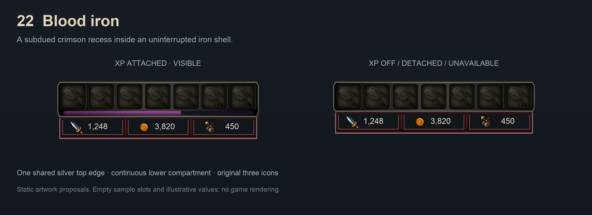
A subdued crimson recess inside an uninterrupted iron shell.
23 · Cobalt etching
Blue steel with fine etching along the lower edge.
24 · Amethyst point
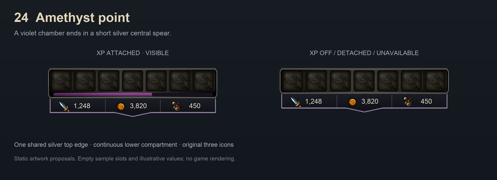
A violet chamber ends in a short silver central spear.
25 · Verdigris glass
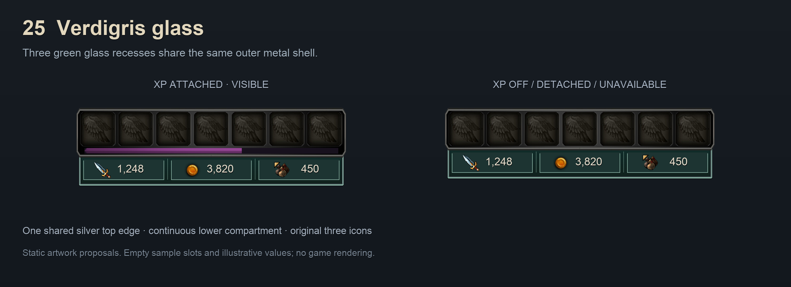
Three green glass recesses share the same outer metal shell.
26 · Ivory ledger
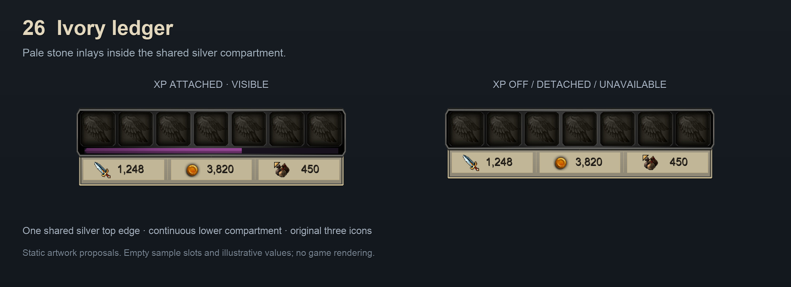
Pale stone inlays inside the shared silver compartment.
27 · Undercut base
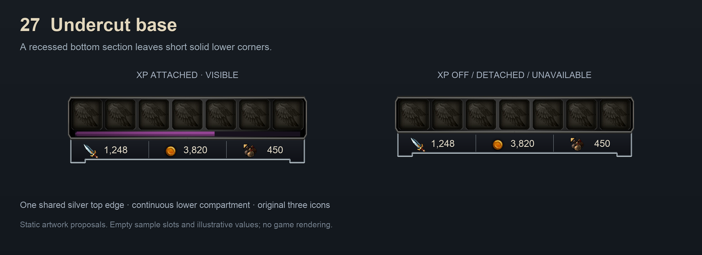
A recessed bottom section leaves short solid lower corners.
28 · Broad bevel
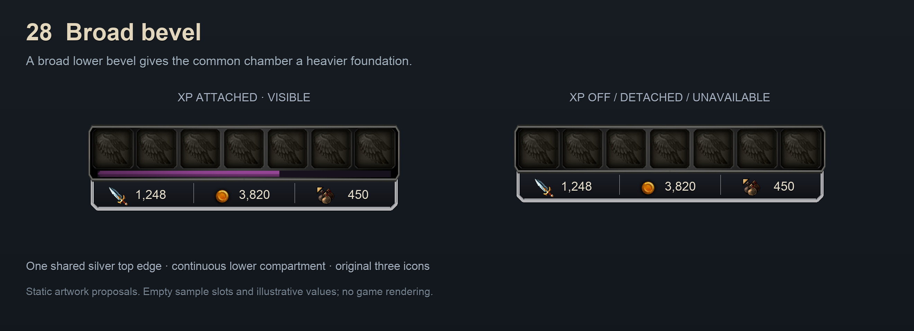
A broad lower bevel gives the common chamber a heavier foundation.
29 · Open lower row
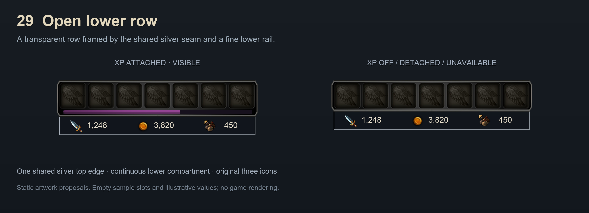
A transparent row framed by the shared silver seam and a fine lower rail.
30 · Arched foundation
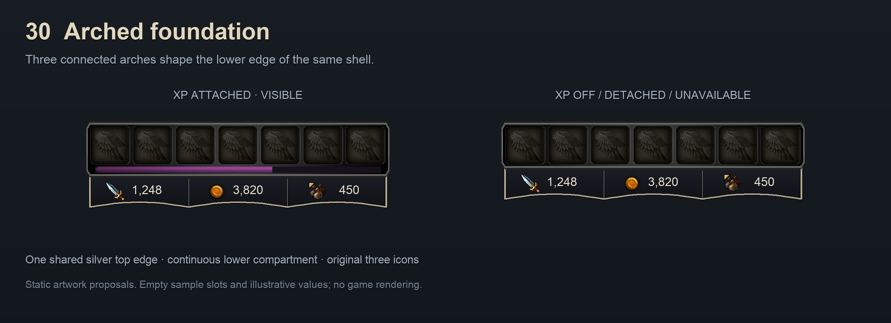
Three connected arches shape the lower edge of the same shell.